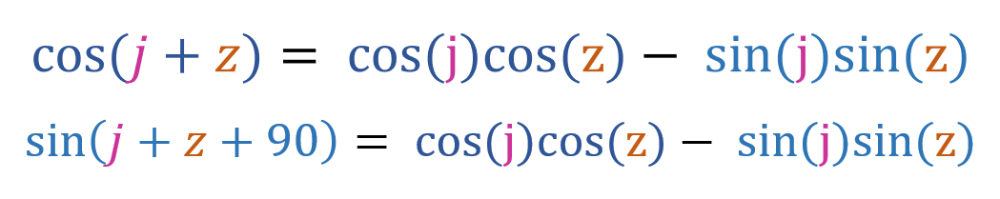
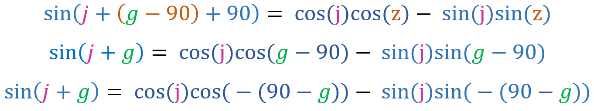
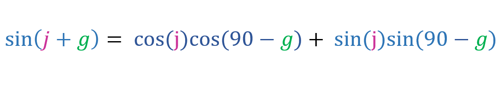
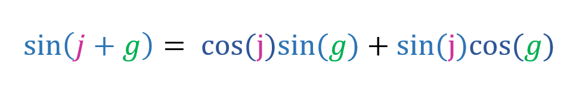
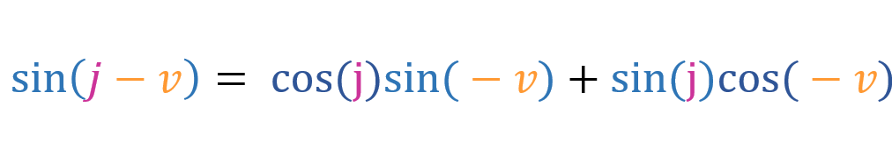
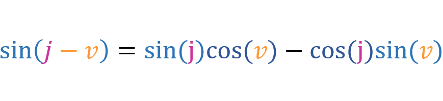

You should already know the addition rule for cosine, if you don't then click here. The addition formula for cosine is written like this:

Since [cos(x) = sin(x + 90)], we can write:
Lets say [z = g - 90]:
We know that [cos(-x) = cos(x)] and that [-sin(-x) = sin(x)]:
Since [cos(90 - x) = sin(x)] and [sin(90 - x) = cos(x)], we can write:
And that is the addition formula for sine. Now lets replace g with -v:
Since [cos(-v) = cos(v)] and [sin(-v) = -sin(v)], we can write the above equation like this:
This is the subtraction rule for sine.